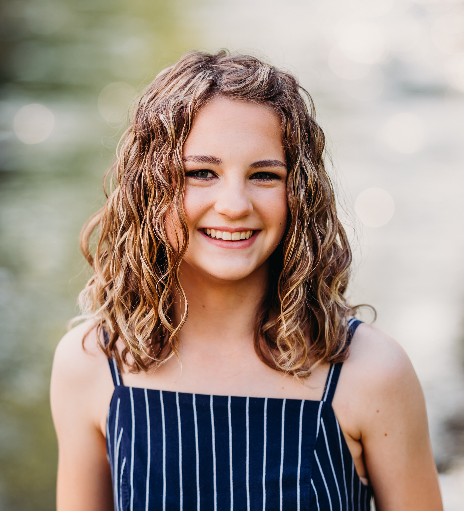

About
Larsen is a Software Engineering major at Rose-Hulman Institute of Technology. She hopes to specialize in Data Science and get a Spanish minor.
Outside of class, Larsen is the On-Campus Chair for the Residence Hall Association (RHA) where she plans community building events for those that live on campus. She is also the Events Chair for the Engineers for a Sustainable World (ESW) club. This year she joined the Mars Rover Robotics team and Women Of Like Fields Passionate About Computing (WOLFPAC). Larsen also enjoys taking walks around campus with people she loves, making bracelets, playing cards, hiking, and kayaking.